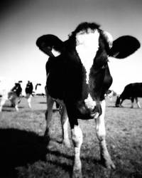
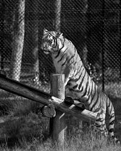
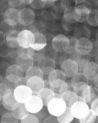
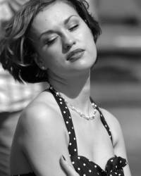
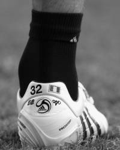
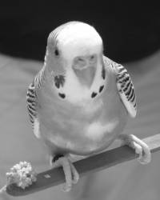

Welcome to the Official Website
of the
LSU National Society of Black Engineers
- Vonzell Williams
- Alexander Canton
- McKenzie Brown
- Sherrard Davidson
- Kailyn Gouch
- Darria Carter
- Arcell Bodden
- Gary Matthews
- Marvyn Muse
- Jordan Favret
- Dexter Hartman
- Joseph Bates
- Kojo Orgle
Click a name for more info.
Vonzell Williams
Chairperson
Vonzell Williams is the Chairperson of the NSBE E-Board. He is an Electrical Engineering student from Erwinville, LA. Vonzell joined the NSBE E-Board to share his knowledge he gained from his millitary career and college experiences to help others become better. He is a former NSBE Programs Chair (2013-2014). During his free time, Vonzell enjoys challenging himself with anything that can take him to the next level in his life. Be it working out, making the best grade on a test, or even thumb wars, Vonzell does anything he can to push himself to the next level.
Alexander Canton
Vice Chairperson
Alex Canton is an Electrical Engineering student from Pittsburgh, Pennsylvania and the NSBE Vice Chairperson. Alex joined the NSBE E-Board because he believed that he could help revamp the mission of NSBE. He maintains that the current chapter executive board members all share a vision that he wants to heavily contribute to. He considers the success of the students within the minority peer groups is very important , particularly in the rigorous fields of engineering. He also hopes to share his experience as well as gain experience with and from the general body to enhance the reputation of the LSU NSBE chapter. In his free time, Alex likes to make iPhone apps, go to the gym, play video games, and watch and play sports.
McKenzie Brown
Secretary
McKenzie Brown is the Secretary of the NSBE E-Board. She is a student majoring in Electrical Engineering and minoring in Communication Studies. She is from Opelousas, Louisiana. McKenzie joined the E-Board after seeing where leadership lacked with the intent of making NSBE a better organization. She maintains that as a dedicated and hard-working engineering major, she doesn't have time for hobbies, but she still finds time for NSBE.
Sherrard Davidson
Treasurer

Sherrard Davidson is a Petroluem Enginnering student from Alexandria, LA, as well as the Treasuerer of NSBE. Sherrard wanted to be involved in a leadership position within a black organization of peers and colleagues that share the same passion he has for engineering. When he's not busy working, Sharrard likes to cut hair, play basketball, listen to music, fish, cook, and watch movies.
Seth Brown
Programs Chair
Insert BIO Here
Kailyn Nicole Gouch
Community Service Chair
Kailyn Nicole Gouch is the Community Service Chair of NSBE. She is an Environmental Enginnering student minoring in Business Administration from Ft. Lauderdale, Florida. One of Kailyn's goals was to become more involved on her campus with community service. Upon finding out that NSBE had such a position, she jumped at the opportunity. She also felt that fulfilling a leadership position would help her come out of her shell and become more social. She looks forward to being a part of the NSBE E-Board and forming strong bonds with other, well-rounded future engineers. In her free time, she ejoys reading about historical African American figures, yoga, and relaxing in the park.
Darria Carter
Conference Planning Chair
Darria Carter of Zachary, Louisiana, is a Mechanical Engineering student, and the Conference Planning Chair of NSBE. She joined the NSBE E-Board with a desire to get involved with a student organization and felt that NSBE was the most welcoming. She felt that she could use her strengths, organizing and planning, to help NSBE. She loves taking care of business and having fun while doing so while surrounding herself with people who have a common goal as herself. On her off time, she enjoys playing tennis, watching movies, making jewelery, cooking, and reading car magazines.
Jordan Baigas
Membership Chair
Insert BIO Here
Arcell Bodden
Publications
Arcell Bodden is a Chemical Engineering student from new Orleans, LA and the Publications Chair of NSBE. He joined the NSBE E-Board in an effort to broaden his horizons as a student in the field of engineering. He states that his position has afforded him the opportunity to work with diverse groups of people and help further the advancement of black people. In his free time, he enjoys spending time with family and friends.
Gary Matthews
Financial Chair
Gary Matthews, a Petroleum Enginnering student from New Orleans, LA, is NSBE's Financial Chair. He joined the NSBE E-Board with the intention of helping to make a difference for minoriry engineering students. His hobbies include fishing, snowboarding, and traveling.
Marvyn Muse
NSBE Senate
Marvyn Muse is a Petroleum Engineering student from New Orleans, LA and holds the NSBE Senate seat on the NSBE E-Board. Marvyn joined the NSBE E-Board to help contribute to the advancement of blacks in the sciences. He felt compelled to take on a leadership role, a role he doesn't normally take, to have more influence on the organization, as well as to build his own leadership skills. Marvyn's past NSBE leadership roles include NSBE Senator. In his off time, he enjoys playing pool with friends, as well as taking part in the diversity ambassadors program. He also tried to stay active by working out, and playing sports, like basketball and intramural flag football.
Jordan Favret
Pre-College Initiative
Jordan Favret is a Mechanical Engineering student from Kemah, Texas, and the Pre-College Initiative of the NSBE E-Board. Jordan joined the E-Board after being inspird by fellow NSBE members at the National Conference. She also admired how NSBE trained its memebrs for success, and how helpful, welcoming, and inclusive NSBE was. In her free time, she enjoys reading, running, power lifting, studying igbo culture, playing and watching soccer, golfing, and driving.
Dexter Hartman
Telecommunications Chair
Dexter Hartman is a Computer Science student minoring in Business Administration, and serves as the NSBE telecommunications chair. Dexter says he started off as an introverted body member with a rough start in school and few positive influences to help him get through college. He believes that NSBE allowed him to reach out of his comfort zone, and in joining the NSBE E-Board, he was introduced to amazing individuals that were all on similar paths as himself who showed him that its acceptable to go through tribulations to become a stronger individual. He considers Brianna Saul, a Region V E-Board member, one of the most influential entities that inspired him to reach out of his comfort zone and gave him a firm push to be part of the best board of leaders in the organization. In Dexter's free time, he enjoys playing and testing video games, creating music with Fruity Loops software, and working out.
Joseph Bates
Historian
Joseph Bates is a New Orleans, LA native, a Computer Science student with a minor in Mathmatics, and serves as the NSBE Historian. He joined NSBE's E-Board wuth the intention of helping contirbute to the widening of NSBE's internet prescence and outreach potential, in part by building NSBE's own custom website form scratch. In his free time, he enjoys working his own personal coding projects, trying and learning to cook new and interesting foods, and going for jogs.
Chris Reynolds
Senate
Insert BIO Here
Jhamal Davis
Chair Emeritus
Insert BIO Here
Kojo Orgle
Parliamentarian
Kojo Orgle is a Petroleum Engineering student from Accra, Ghana. He serves as the Parliamentarian of NSBE. Kojo believes that NSBE puts its members a step above their peers by providing them with job opportunities, scholarships, and other other awards, as well as the care of a loving family and learning opportunities. Since joining NSBE at lSU, Kojo has been at the recieving end of all these rewards, allowing him to better himself an an engineer, as well as an individual. He feels that it is coherent for him to continue the hard work of officers before him and do his best to contribute to the development of NSBE. He believes that as Parliamentarian, he can accomplish these goals. Kojo spends his free time getting involved with his organizations. He has recently contributed a lot of his time to Engineers without Borders, where he had the opportunity to design a sustainable borehole for a group of people in a villafe in Gambia to access clean water.
Lekan Kassim
Social Chair
Insert BIO Here